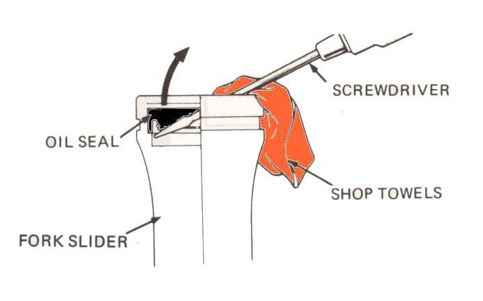

Fork oil wears out: it gets thin, dirty and mixed with water, and the fork then bounces and bottoms out. Leaking seals let the oil escape. Replacing the oil and seals means taking each fork leg off the bike and apart, holding the damper rod with a special tool, driving new seals in square, and refilling with the exact oil grade and amount. It is a workshop job on this site. This page helps you judge what is needed and what to ask for.
Safety
- If fork oil has reached the brake disc or pads, do not ride until the disc is cleaned and oily pads are replaced.
- A fork cap holds back a compressed spring. It can fly off when unscrewed. Do not open forks without the right tools and support.
- Do not straighten a bent stanchion or damper rod. The K-Light 125 manual says never to straighten the damper rod.
What you can check before the workshop
- Do Inspect the front forks. Note which leg leaks and whether the tube is pitted, scratched or bent.
- Try Clean fork seals first on a newly started leak with an undamaged tube.
- Note how the fork behaves: bouncy, bottoming, harsh or sticky. This helps the workshop decide on oil, springs or bushes.
- Find your fork's details: make and model, year, and if possible the seal size printed on the old seal (K-Light 125 seal: 37 x 50 x 11 mm).
What the workshop will do
- Remove the front wheel, caliper, mudguard and fork legs.
- Remove the cap and spring, drain the oil, look at its colour: milky oil means water has got in past the seals.
- Hold the damper rod with a holder and remove the bottom Allen bolt (usually thread-locked; refit with new sealing washer and thread locker).
- Remove dust seal, clip and oil seal without scratching the seal bore.
- Inspect: tube bend and pitting, bushes, damper rod and its ring, rebound spring, and spring free length (K-Light 125: 300 mm new, replace below 295 mm). Replace springs in pairs.
- Fit new oil seals and dust seals with a seal driver, refill each leg with the exact amount and grade from the manual, pump to remove air, refit spring and cap.
- Refit the legs at the correct height in the clamps and tighten all bolts to the model torques.
What to ask for
- New oil seals and dust seals on both legs, even if only one leaks.
- The oil grade and amount from your manual, measured per leg. K-Light 125: 285 ± 2 ml per leg of 46# fork oil. Do not accept a guessed grade: 46# is the manual's own name and no equivalent is confirmed here.
- To see the old oil and the stanchions. Pitted or bent tubes must be replaced, or new seals leak again.
Check your work
- Both legs dry after a week of riding.
- Both legs feel the same when you push the bars down with the brake on.
- The bike settles after a bump with one movement, not several.
If it did not fix the problem
- Still bouncy or bottoming: Front forks bottom out.
- Stiff or sticky after the job: Front forks feel sticky or stiff; the legs may need to be settled with Align the front wheel, forks and handlebar.
Reference values (K-Light 125)
| Item | Value | Source |
|---|---|---|
| Fork oil per leg | 285 ± 2 ml, grade 46# | K-Light 125 manual, PDF p. 156 |
| Fork spring free length, new / limit | 300 mm / 295 mm | K-Light 125 manual, PDF p. 154 |
| Fork oil seal size | 37 x 50 x 11 mm | K-Light 125 manual, PDF p. 151 |